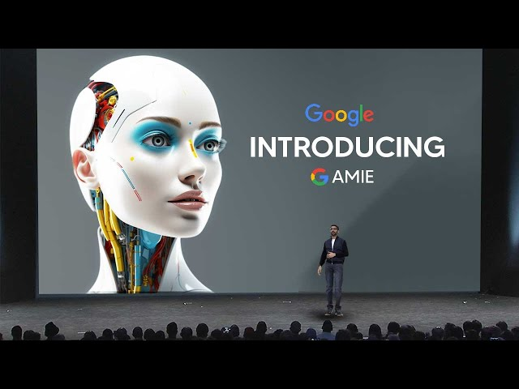

Can AI Surpass Human Doctors
Can AI Surpass Human Doctors?
In a recent development that’s stirring up the medical community and beyond, Google’s AI has demonstrated capabilities that suggest it could not only match but potentially exceed human doctors in both diagnostic accuracy and patient interaction. This revelation, covered extensively in a Nature news article, highlights an AI system adept at medical interviews, promising to revolutionize how medical histories are taken and diagnoses are made. The potential for AI to democratize medicine is immense, but this technological leap also introduces significant ethical, privacy, and relational dynamics that merit a closer discussion.
The Capabilities of Google’s AI in Medicine
Google’s new AI, AMIE, described as more empathetic and accurate than human doctors, is based on a large language model that handles medical diagnostics. The system has been tested against board-certified physicians and shown remarkable proficiency in diagnosing respiratory and cardiovascular conditions among others. Such advancements suggest that AI could soon be a staple in medical diagnostics, providing a critical tool in patient care and medical decision-making.

However, the performance of Google’s AI raises profound questions about the future role of human doctors. Will AI complement the traditional patient-doctor relationship, or could it replace aspects of it entirely? While AI can offer consistency, speed, and access to medical diagnostics, it lacks the human touch that is crucial in medical care—a nuanced aspect that cannot be quantified but is deeply felt by patients.
The Promise of Democratizing Healthcare
One of the most compelling arguments for the integration of AI in healthcare is its potential to make high-quality medical advice more accessible. For regions with a shortage of medical professionals, AI could provide critical support, ensuring patients receive timely and accurate diagnoses that might otherwise be unavailable.
Yet, this promise comes with significant challenges. The application of AI in medicine must navigate complex issues of privacy and data security. Patient data is incredibly sensitive, and the storage and handling of this data by AI systems must be governed by stringent protocols to prevent breaches that could erode public trust.
Moreover, biases in AI are a significant concern. AI systems learn from data, and if this data is biased, the AI’s diagnostics will perpetuate these biases. Ensuring that AI is fair and equitable requires rigorous training datasets and continuous oversight to identify and correct biases as they emerge.
Ethical and Relational Considerations
Introducing AI into the realm of patient care also sparks an ethical debate about the nature of care itself. Care is inherently personal and relational; it involves trust and empathy. While AI can simulate empathy to a degree, there’s an authenticity in human interactions that AI cannot replicate. The risk is that over-reliance on AI could dilute the quality of care, reducing it to a transactional interaction devoid of human warmth and genuine empathy.
Patients often value the reassurance from a doctor—a nuanced human interaction where empathy and ethical considerations play a significant role. How AI fits into this framework without diminishing the human aspect of care is a delicate balance that needs careful consideration.
The Road Ahead
As we stand on the brink of what could be a transformative shift in healthcare, driven by AI, it’s crucial to approach this future with both optimism and caution. The integration of AI into healthcare offers incredible benefits, including efficiency, accessibility, and potentially even greater diagnostic accuracy. However, the path forward must also consider the preservation of the core values of healthcare, which include empathy, privacy, and ethical considerations.
The future of healthcare with AI promises to be a landscape of improved access and efficiency, but it must be navigated thoughtfully to ensure that technological advancements enhance rather than undermine the patient-doctor relationship. The ongoing development and integration of AI into healthcare should be a collaborative effort among technologists, healthcare providers, and patients to create a system that respects and enhances the rights and well-being of all patients.
The conversation about AI in healthcare is just beginning, and it’s a dialogue that needs voices from all corners of society. As we venture further into this new territory, the guiding principles should be clear: embrace the benefits of technology, mitigate the risks, and always prioritize the dignity and humanity of patient care.